Compare read and molecule counts
2015-06-11
Last updated: 2015-09-28
Code version: 3f442a23f405d3564d9ab3197ec337df22fe9383
First, compared counts via three methods:
- reads_cpm - standard counts per million
- molecules - counts of molecules identified using UMIs
- molecules_per_lane - counts of molecules identified using UMIs per each sequencing lane and then summed per sample
Then investigated the relationship between sequencing depth and total molecule count per sample. Found that sequencing depth affects the total molecule count, which in turn affects PC1. Will use TMM-normalize molecule counts per million mapped (cpm) for downstream analyses.
Therefore reran the original comparisons between reads and molecules, but this time using TMM-normalized counts per million for the molecules similar to the reads. The correlation of the mean expression improved.
Input
library("dplyr")
library("ggplot2")
theme_set(theme_bw(base_size = 16))
library("edgeR")
source("functions.R")Input annotation.
anno <- read.table("../data/annotation.txt", header = TRUE,
stringsAsFactors = FALSE)
head(anno) individual batch well sample_id
1 19098 1 A01 NA19098.1.A01
2 19098 1 A02 NA19098.1.A02
3 19098 1 A03 NA19098.1.A03
4 19098 1 A04 NA19098.1.A04
5 19098 1 A05 NA19098.1.A05
6 19098 1 A06 NA19098.1.A06Input read counts.
reads <- read.table("../data/reads.txt", header = TRUE,
stringsAsFactors = FALSE)Input molecule counts.
molecules <- read.table("../data/molecules.txt", header = TRUE,
stringsAsFactors = FALSE)Input molecule counts summed across lanes.
molecules_per_lane <- read.table("../data/molecules-per-lane.txt", header = TRUE,
stringsAsFactors = FALSE)Input list of quality single cells.
quality_single_cells <- scan("../data/quality-single-cells.txt",
what = "character")Filter
Keep only the single cells that passed the QC filters and the bulk samples.
reads <- reads[, grepl("bulk", colnames(reads)) |
colnames(reads) %in% quality_single_cells]
molecules <- molecules[, grepl("bulk", colnames(molecules)) |
colnames(molecules) %in% quality_single_cells]
molecules_per_lane <- molecules_per_lane[, grepl("bulk", colnames(molecules_per_lane)) |
colnames(molecules_per_lane) %in% quality_single_cells]
anno <- anno[anno$well == "bulk" | anno$sample_id %in% quality_single_cells, ]
stopifnot(dim(reads) == dim(molecules),
nrow(anno) == ncol(molecules_per_lane))Remove genes with zero read or molecule counts in the single cell or bulk samples.
expressed <- rowSums(reads[anno$well == "bulk"]) > 0 &
rowSums(reads[anno$well != "bulk"]) > 0 &
rowSums(molecules[anno$well == "bulk"]) > 0 &
rowSums(molecules[anno$well != "bulk"]) > 0
reads <- reads[expressed, ]
molecules <- molecules[expressed, ]
molecules_per_lane <- molecules_per_lane[expressed, ]Sequencing depth
Calculate the number of reads per molecule of each gene in each cell.
reads_per_molecule <- as.matrix(reads/molecules)
hist(reads_per_molecule, breaks=100)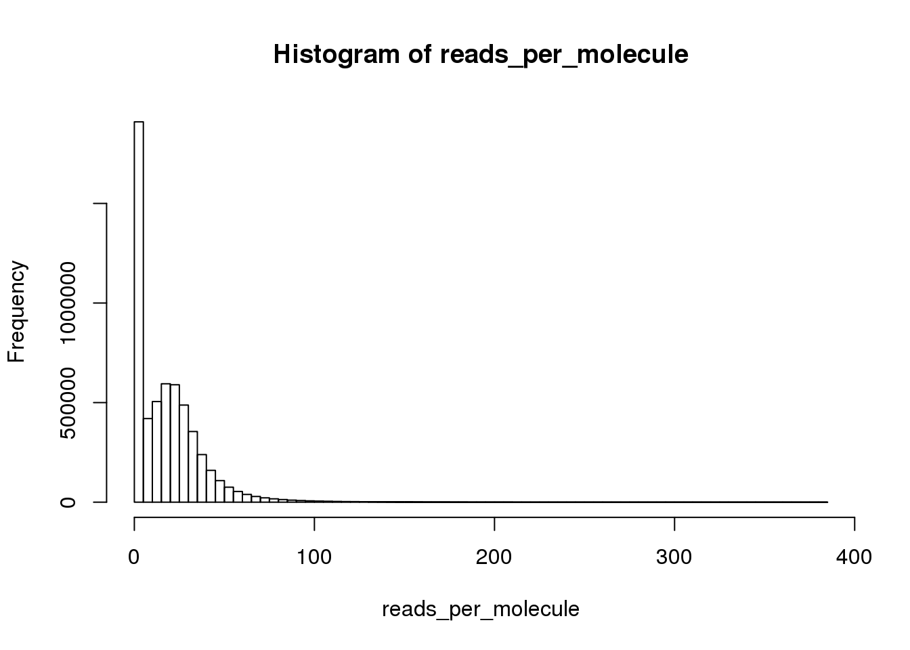
plot(density(reads_per_molecule, na.rm = TRUE))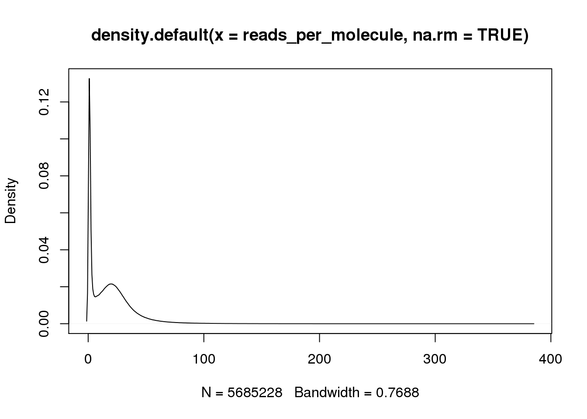
Calculate counts per million (cpm)
Calculate cpm for the reads data using TMM-normalization.
norm_factors_reads <- calcNormFactors(reads, method = "TMM")
reads_cpm <- cpm(reads, lib.size = colSums(reads) * norm_factors_reads)And for the molecules.
norm_factors_mol <- calcNormFactors(molecules, method = "TMM")
molecules_cpm <- cpm(molecules, lib.size = colSums(molecules) * norm_factors_mol)And for the molecules summed per lane.
norm_factors_mol_per_lane <- calcNormFactors(molecules_per_lane, method = "TMM")
molecules_per_lane_cpm <- cpm(molecules_per_lane,
lib.size = colSums(molecules_per_lane) *
norm_factors_mol_per_lane)Compare reads and molecules
Compare the means of each gene obtained via the different methods.
mean_data <- data.frame(reads_cpm = rowMeans(reads_cpm),
molecules = rowMeans(molecules),
molecules_per_lane = rowMeans(molecules_per_lane))
cor(mean_data) reads_cpm molecules molecules_per_lane
reads_cpm 1.0000000 0.8909973 0.8769356
molecules 0.8909973 1.0000000 0.9944794
molecules_per_lane 0.8769356 0.9944794 1.0000000All three are highly correlated.
mean_data$type <- ifelse(grepl("ERCC", rownames(mean_data)), "ERCC", "gene")
ggplot(mean_data, aes(x = reads_cpm, y = molecules)) +
geom_point() +
geom_smooth(method = "lm") +
facet_wrap(~ type)
There are only a few genes with molecule counts greater than the number of UMIs.
rownames(molecules)[rowMeans(molecules) > 1024][1] "ENSG00000198712" "ENSG00000198938" "ENSG00000198886"They are highly expressed mitochondrial genes.
ggplot(mean_data, aes(x = reads_cpm, y = molecules)) +
geom_point() +
geom_smooth(method = "lm") +
facet_wrap(~ type) +
ylim(0, 1100)
ggplot(mean_data, aes(x = reads_cpm, y = molecules_per_lane)) +
geom_point() +
geom_smooth(method = "lm") +
facet_wrap(~ type)
The molecule counts and the molecule counts summed per sequencing lane are highly correlated. This indicates that most of the bias is introduced in the library preparation step and not during sequencing.
ggplot(mean_data, aes(x = molecules_per_lane, y = molecules)) +
geom_point() +
geom_smooth(method = "lm") +
facet_wrap(~ type)
Effect of sequencing depth on molecule count
How dependent are the molecule counts on the total molecule count for a given sample? Should we standardize by the total molecule count per sample? Islam et al. 2014 argue that this is not necessary, “scales for molecule-counting scatterplots (Fig. 2d,e) are absolute and would not change appreciably if the number of reads were increased.” Let’s check this assumption.
Does the total number of molecules per sample vary with the total number of reads? If it is not necessary to standardize the molecule counts, the molecule counts should be consistent across varying read depths.
total_counts_data <- data.frame(total_reads = colSums(reads) / 10^6,
total_molecules = colSums(molecules) / 10^3,
anno)
str(total_counts_data)'data.frame': 587 obs. of 6 variables:
$ total_reads : num 1.89 1.99 1.27 1.99 1.75 ...
$ total_molecules: num 93.1 95.1 74.7 104.7 98.2 ...
$ individual : int 19098 19098 19098 19098 19098 19098 19098 19098 19098 19098 ...
$ batch : int 1 1 1 1 1 1 1 1 1 1 ...
$ well : chr "A01" "A02" "A04" "A05" ...
$ sample_id : chr "NA19098.1.A01" "NA19098.1.A02" "NA19098.1.A04" "NA19098.1.A05" ...total_counts_single <- ggplot(total_counts_data[total_counts_data$well != "bulk", ],
aes(x = total_reads, y = total_molecules)) +
geom_point(aes(col = as.factor(individual), shape = as.factor(batch))) +
geom_smooth(method = "lm") +
labs(x = "Total number of reads (x10^6)",
y = "Total number of molecules (x10^3)",
title = "Effect of read depth on single cells")
total_counts_single
total_counts_bulk <- total_counts_single %+%
total_counts_data[total_counts_data$well == "bulk", ] +
labs(x = "Total number of reads (x10^6)",
y = "Total number of molecules (x10^3)",
title = "Effect of read depth on bulk samples")
total_counts_bulk
So this is clearly not the case. Perhaps in the ideal case where all the cells are sequenced to saturation, then any increasing sequencing would not make a difference in the molecule counts.
Also, there is a difference in total molecule count between the three individuals.
total_molecules_ind <- ggplot(total_counts_data[total_counts_data$well != "bulk", ],
aes(x = as.factor(individual), y = total_molecules)) +
geom_boxplot(aes(fill = as.factor(batch))) +
scale_fill_brewer(type = "qual", palette = "Dark2", name ="Batch") +
labs(x = "Individual",
y = "Molecules (x10^3)",
title = "Total molecule counts vary across individuals")
total_molecules_ind
But not for the total number of reads, as expected from the plot above of the effect of read depth where all three individuals span the x-axis of the total number of reads.
total_reads_ind <- total_molecules_ind %+% aes(y = total_reads) +
labs(y = "Reads (x10^6)",
title = "Total read counts vary across individuals")
total_reads_ind
There is a clear difference between individuals. Is there a difference between the full 9 batches?
total_counts_single_batch <- ggplot(total_counts_data[total_counts_data$well != "bulk", ],
aes(x = total_reads, y = total_molecules,
col = paste(individual, batch, sep = "."))) +
geom_point() +
scale_color_brewer(palette = "Set1", name = "9 batches") +
labs(x = "Total number of reads (x10^6)",
y = "Total number of molecules (x10^3)",
title = "Effect of read depth on single cells")
total_counts_single_batch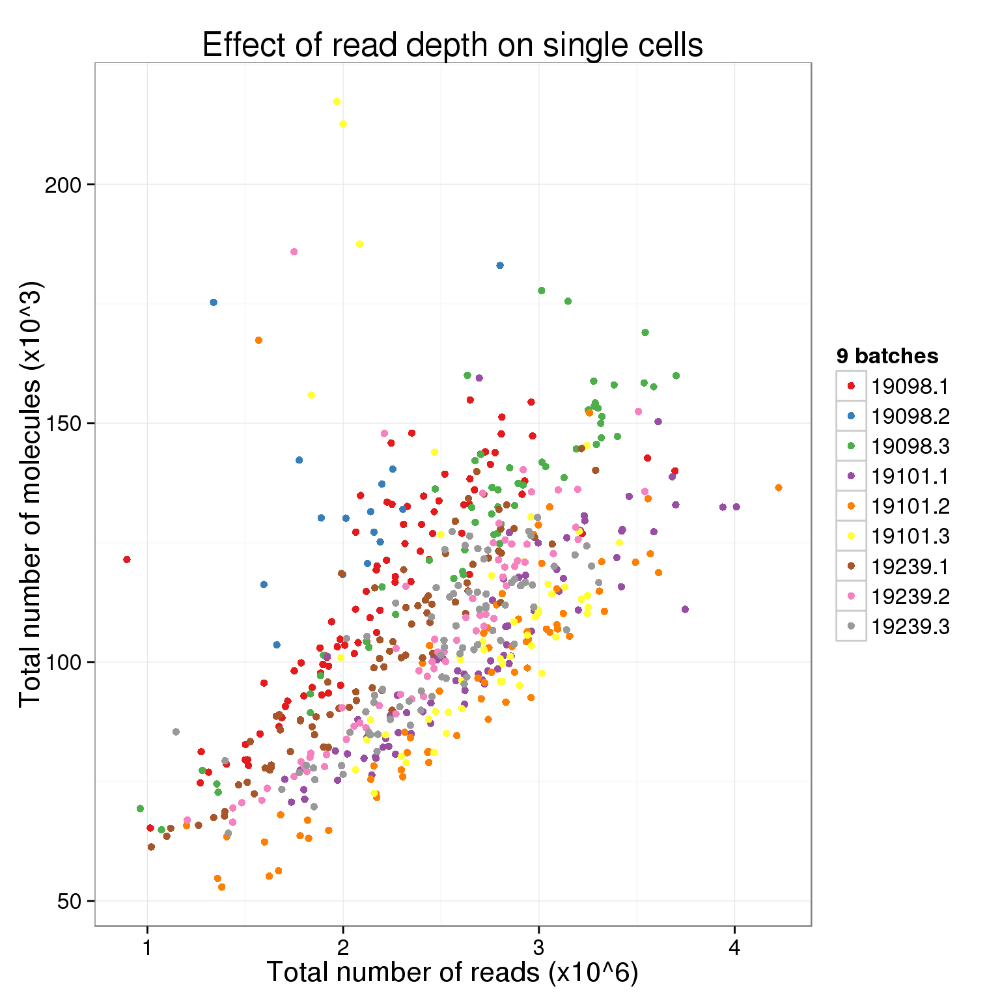
It is diffcult to see when all 9 are plotted at once. Here are the batches split by individual.
total_counts_single_ind <- ggplot(total_counts_data[total_counts_data$well != "bulk", ],
aes(x = total_reads, y = total_molecules)) +
geom_point(aes(color = as.factor(batch))) +
facet_wrap(~individual, nrow = 3) +
scale_color_brewer(palette = "Dark2", name = "batch") +
labs(x = "Total number of reads (x10^6)",
y = "Total number of molecules (x10^3)",
title = "Effect of read depth on single cells")
total_counts_single_ind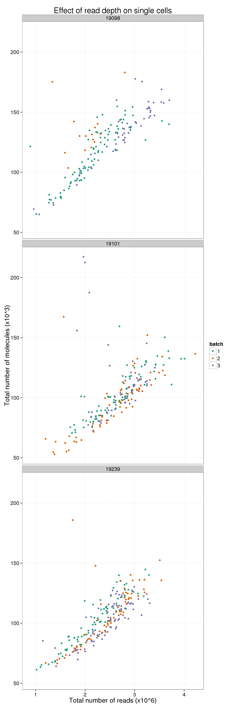
Pairwise distance between cells
Pairwise distance in (total reads, total molecules) between batches or individuals.
- Compute pairwise Euclidean distance between cells.
total_counts_single <- total_counts_data[total_counts_data$well != "bulk", ]
total_counts_single_dist <- as.matrix( dist(total_counts_single[ , c("total_reads", "total_molecules")]) )
rownames(total_counts_single_dist) <- with(total_counts_single,
paste(individual, batch, sep = "_"))
colnames(total_counts_single_dist) <- rownames(total_counts_single_dist)
total_counts_single[1:2, 1:2] total_reads total_molecules
NA19098.1.A01 1.892562 93.117
NA19098.1.A02 1.988496 95.125ind_index <- (total_counts_single$individual)
ind_batch_index <- with(total_counts_single,paste(individual, batch, sep = "_"))
same_ind_index <- outer(ind_index,ind_index,function(x,y) x==y)
same_batch_index <- outer(ind_batch_index,ind_batch_index,function(x,y) x==y)
dim_temp <- dim(total_counts_single_dist)
dist_index_matrix <- matrix("diff_ind",nrow=dim_temp[1],ncol=dim_temp[2])
dist_index_matrix[same_ind_index & !same_batch_index] <- "same_ind_diff_batch"
dist_index_matrix[same_batch_index] <- "same_batch"
ans <- lapply(unique(c(dist_index_matrix)),function(x){
temp <- c(total_counts_single_dist[(dist_index_matrix==x)&(upper.tri(dist_index_matrix,diag=FALSE))])
data.frame(dist=temp,type=rep(x,length(temp)))
})
ans1 <- do.call(rbind,ans)
boxplot(dist~type,data=ans1)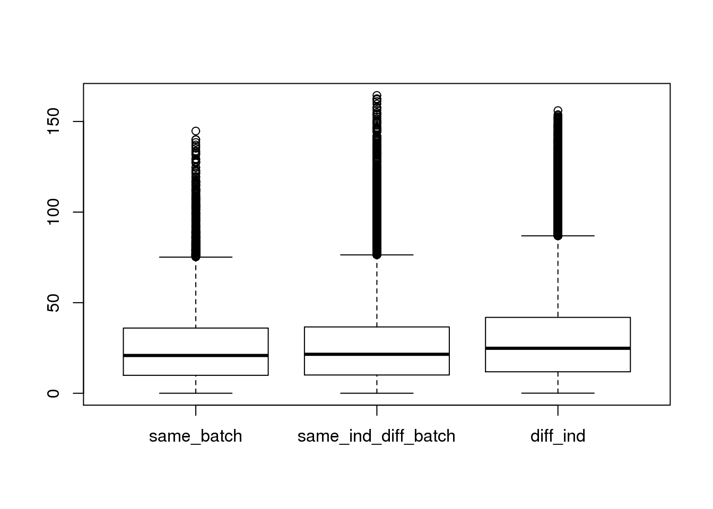
plot(density(ans1$dist[ans1$type=="same_batch"]))
lines(density(ans1$dist[ans1$type=="same_ind_diff_batch"]),col=2)
lines(density(ans1$dist[ans1$type=="diff_ind"]),col=3)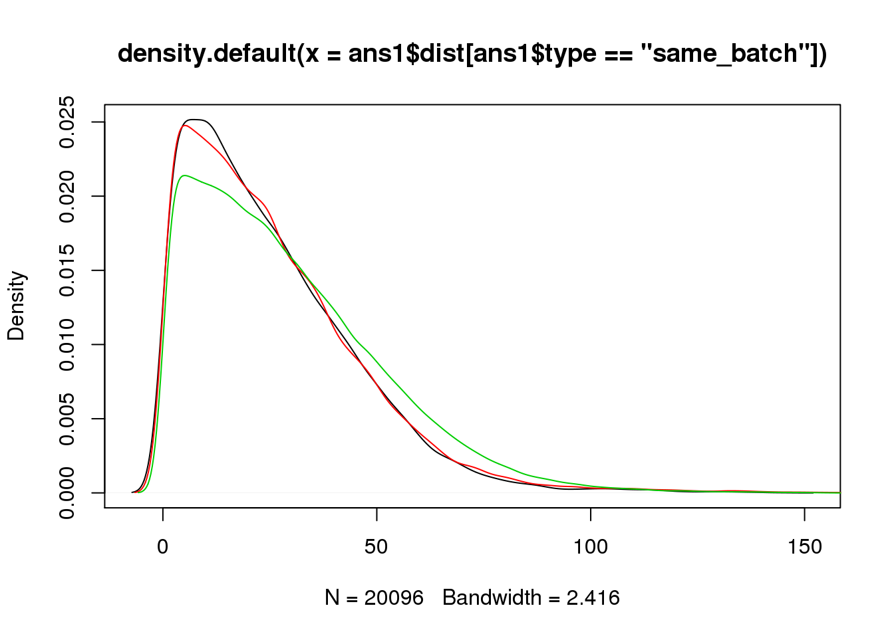
ggplot(ans1, aes(x= factor(type), y = dist, col = factor(type)), height = 600, width = 2000) +
geom_boxplot(outlier.shape = NA, alpha = .01, width = .2, position = position_dodge(width = .9)) +
ylim(0, 100) +
labs(title = "cell-cell distance (total molecule and total reads)") +
theme(axis.text.x = element_text(hjust=1, angle = 45))Warning: Removed 1285 rows containing non-finite values (stat_boxplot).Warning: Removed 292 rows containing missing values (geom_point).Warning: Removed 613 rows containing missing values (geom_point).Warning: Removed 1195 rows containing missing values (geom_point).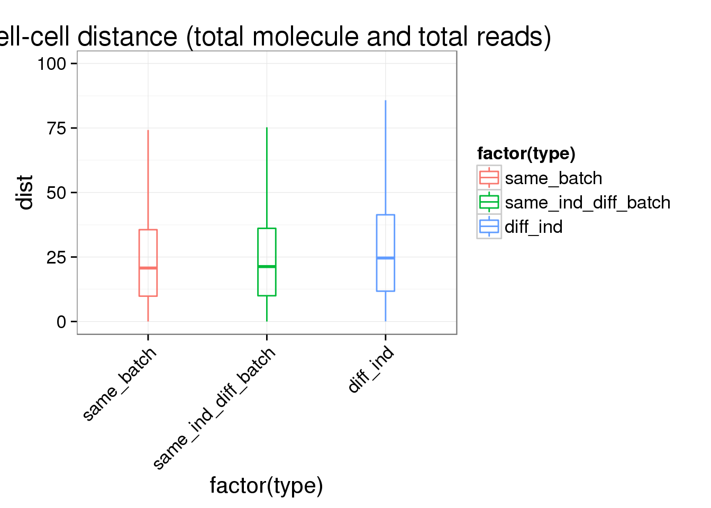
summary(lm(dist~type,data=ans1))
Call:
lm(formula = dist ~ type, data = ans1)
Residuals:
Min 1Q Median 3Q Max
-29.126 -16.646 -4.327 12.006 138.499
Coefficients:
Estimate Std. Error t value Pr(>|t|)
(Intercept) 25.0283 0.1512 165.572 < 2e-16 ***
typesame_ind_diff_batch 0.8673 0.1883 4.606 4.1e-06 ***
typediff_ind 4.1509 0.1644 25.254 < 2e-16 ***
---
Signif. codes: 0 '***' 0.001 '**' 0.01 '*' 0.05 '.' 0.1 ' ' 1
Residual standard error: 21.43 on 166750 degrees of freedom
Multiple R-squared: 0.006382, Adjusted R-squared: 0.00637
F-statistic: 535.5 on 2 and 166750 DF, p-value: < 2.2e-16Reads to molecule conversion rate
## calculate conversion rate
total_counts_single$conversion_rate <- total_counts_single$total_reads/ total_counts_single$total_molecules
plot(total_counts_single$conversion_rate,col=total_counts_single$batch)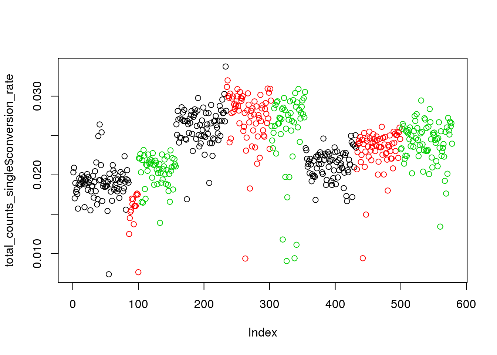
## create 9 batches
total_counts_single$batch_num <- paste(total_counts_single$individual,total_counts_single$batch,sep="_")
## calculate individual mean for standardization
avg_conversion_rate <- do.call(rbind,
lapply(unique(total_counts_single$individual),function(x){
c(individual=x,avg_conv_rate=mean(total_counts_single$conversion_rate[total_counts_single$individual==x]))
}))
total_counts_single <-merge(total_counts_single,avg_conversion_rate,by="individual")
## create std_conv_rate within individual to remove individual effect
total_counts_single$std_conv_rate <- total_counts_single$conversion_rate - total_counts_single$avg_conv_rate
plot(total_counts_single$std_conv_rate,col=total_counts_single$batch)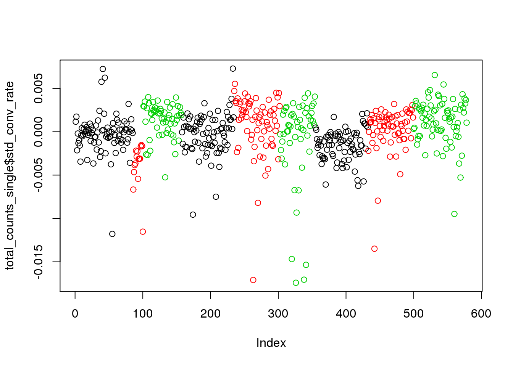
summary(lm(std_conv_rate~batch_num,data=total_counts_single))
Call:
lm(formula = std_conv_rate ~ batch_num, data = total_counts_single)
Residuals:
Min 1Q Median 3Q Max
-0.017995 -0.001046 0.000454 0.001550 0.007489
Coefficients:
Estimate Std. Error t value Pr(>|t|)
(Intercept) -2.439e-04 3.055e-04 -0.798 0.425037
batch_num19098_2 -3.580e-03 7.888e-04 -4.539 6.91e-06 ***
batch_num19098_3 1.614e-03 4.822e-04 3.347 0.000871 ***
batch_num19101_1 3.796e-05 4.431e-04 0.086 0.931757
batch_num19101_2 1.144e-03 4.583e-04 2.496 0.012834 *
batch_num19101_3 -6.282e-04 4.959e-04 -1.267 0.205748
batch_num19239_1 -1.306e-03 4.416e-04 -2.956 0.003242 **
batch_num19239_2 5.405e-04 4.601e-04 1.175 0.240640
batch_num19239_3 1.522e-03 4.402e-04 3.458 0.000584 ***
---
Signif. codes: 0 '***' 0.001 '**' 0.01 '*' 0.05 '.' 0.1 ' ' 1
Residual standard error: 0.002817 on 569 degrees of freedom
Multiple R-squared: 0.1427, Adjusted R-squared: 0.1307
F-statistic: 11.84 on 8 and 569 DF, p-value: 1.14e-15## violin plots
ggplot(total_counts_single, aes(x= factor(batch_num), y = conversion_rate, fill = factor(batch_num)), height = 600, width = 2000) +
geom_violin(alpha = .5) +
geom_boxplot(alpha = .01, width = .2, position = position_dodge(width = .9)) +
labs(x = "batch", y = "conversion rate", title = "individual batch effect of conversion rate") +
theme(axis.text.x = element_text(hjust=1, angle = 45))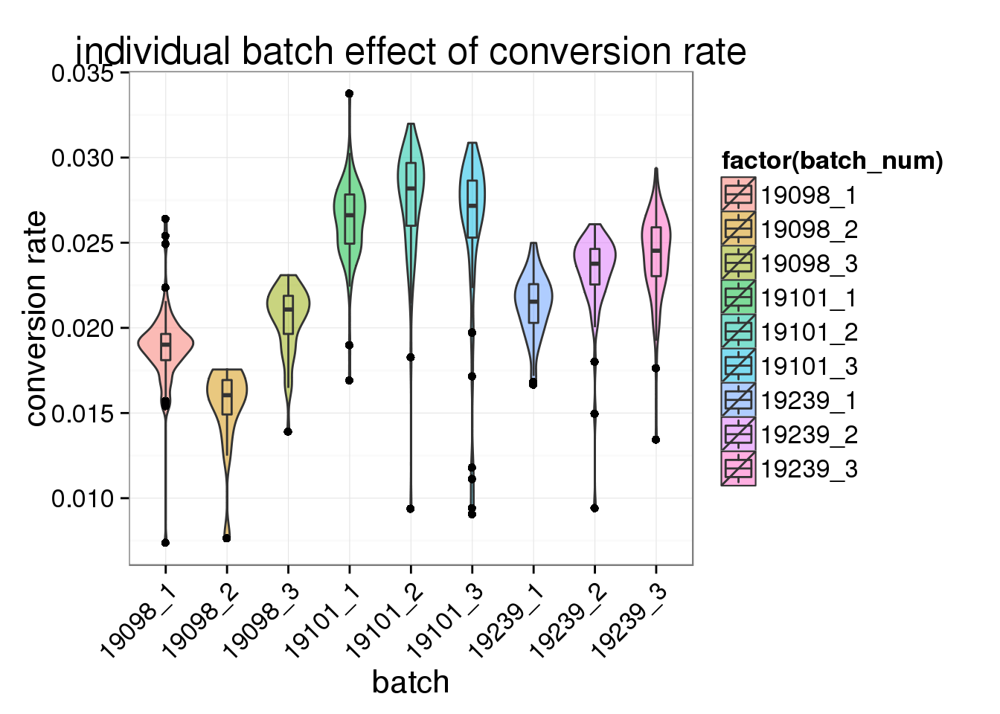
ggplot(total_counts_single, aes(x= factor(batch_num), y = std_conv_rate, fill = factor(batch_num)), height = 600, width = 2000) +
geom_violin(alpha = .5) +
geom_boxplot(alpha = .01, width = .2, position = position_dodge(width = .9)) +
labs(x = "batch", y = "std conversion rate", title = "batch effect of conversion rate") +
theme(axis.text.x = element_text(hjust=1, angle = 45))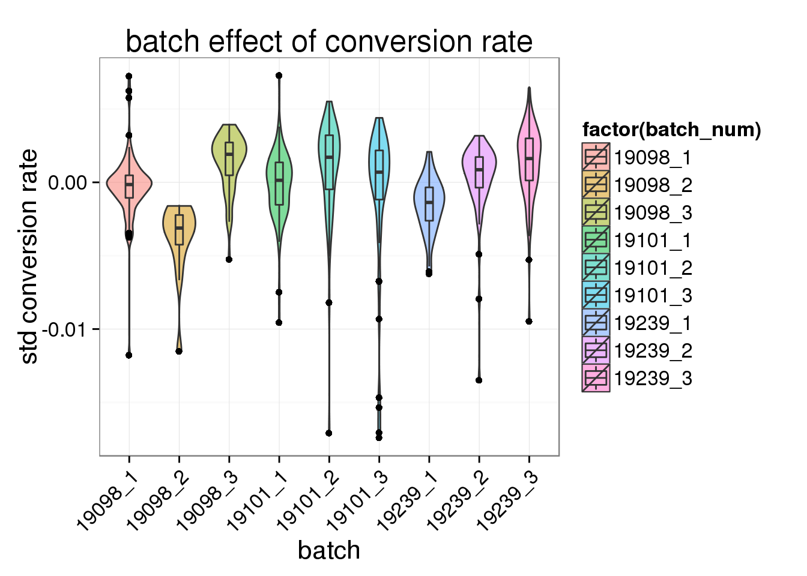
PCA
What effect does this difference in total molecule count have in PCA?
pca_single <- run_pca(molecules[, anno$well != "bulk"])plot_pca(pca_single$PCs, explained = pca_single$explained,
metadata = anno[anno$well != "bulk", ], color = "individual",
shape = "batch", factors = c("individual", "batch")) +
labs(title = "PCA single cells uncorrected for depth")
pc1_v_total_mol_uncorrected <- ggplot(cbind(total_counts_data[total_counts_data$well != "bulk", ], pca_single$PCs),
aes(x = total_molecules, y = PC1, col = as.factor(individual),
shape = as.factor(batch))) +
geom_point(alpha = 0.5) +
labs(x = "Total number of molecules (x10^3)")
pc1_v_total_mol_uncorrected
pc2_v_total_mol_uncorrected <- pc1_v_total_mol_uncorrected %+% aes(y = PC2)
pc2_v_total_mol_uncorrected
The total molecule depth per sample is highly correlated with PC1. However, it did not affect PC2, which captures the individual effect.
What happens to the PCA results when depth is properly accounted for using TMM-normalized counts per million?
norm_factors_mol_single <- calcNormFactors(molecules[, anno$well != "bulk"],
method = "TMM")
molecules_cpm_single <- cpm(molecules[, anno$well != "bulk"],
lib.size = colSums(molecules[, anno$well != "bulk"]) *
norm_factors_mol_single)pca_single_cpm <- run_pca(molecules_cpm_single)plot_pca(pca_single_cpm$PCs, explained = pca_single_cpm$explained,
metadata = anno[anno$well != "bulk", ], color = "individual",
shape = "batch", factors = c("individual", "batch")) +
labs(title = "PCA single cells *corrected* for depth")
pc1_v_total_mol_corrected <- pc1_v_total_mol_uncorrected %+%
cbind(total_counts_data[total_counts_data$well != "bulk", ], pca_single_cpm$PCs) +
labs(title = "PCA single cells *corrected* for depth")
pc1_v_total_mol_corrected
pc2_v_total_mol_corrected <- pc1_v_total_mol_corrected %+% aes(y = PC2)
pc2_v_total_mol_corrected
PC1 is no longer associated with sequencing depth!
Compare reads and standardized molecules
This time standardize the molecule counts for the sequencing depth.
Compare the means of each gene obtained via the different methods.
mean_data_std <- data.frame(reads_cpm = rowMeans(reads_cpm),
molecules_cpm = rowMeans(molecules_cpm),
molecules_per_lane_cpm = rowMeans(molecules_per_lane_cpm))
cor(mean_data_std) reads_cpm molecules_cpm molecules_per_lane_cpm
reads_cpm 1.0000000 0.9704740 0.9703383
molecules_cpm 0.9704740 1.0000000 0.9986011
molecules_per_lane_cpm 0.9703383 0.9986011 1.0000000All three are even more highly correlated now that the molecules are standardized.
mean_data_std$type <- ifelse(grepl("ERCC", rownames(mean_data_std)), "ERCC", "gene")
ggplot(mean_data_std, aes(x = reads_cpm, y = molecules_cpm)) +
geom_point() +
geom_smooth(method = "lm") +
facet_wrap(~ type)
Examining the lower range where most genes are:
ggplot(mean_data_std, aes(x = reads_cpm, y = molecules_cpm)) +
geom_point() +
geom_smooth(method = "lm") +
facet_wrap(~ type) +
ylim(0, 10000)
ggplot(mean_data_std, aes(x = reads_cpm, y = molecules_per_lane_cpm)) +
geom_point() +
geom_smooth(method = "lm") +
facet_wrap(~ type)
And as above, the molecule counts and the molecule counts summed per sequencing lane are highly correlated, which indicates that most of the bias is introduced in the library preparation step and not during sequencing.
ggplot(mean_data_std, aes(x = molecules_per_lane_cpm, y = molecules_cpm)) +
geom_point() +
geom_smooth(method = "lm") +
facet_wrap(~ type)
Session information
sessionInfo()R version 3.2.0 (2015-04-16)
Platform: x86_64-unknown-linux-gnu (64-bit)
locale:
[1] LC_CTYPE=en_US.UTF-8 LC_NUMERIC=C
[3] LC_TIME=en_US.UTF-8 LC_COLLATE=en_US.UTF-8
[5] LC_MONETARY=en_US.UTF-8 LC_MESSAGES=en_US.UTF-8
[7] LC_PAPER=en_US.UTF-8 LC_NAME=C
[9] LC_ADDRESS=C LC_TELEPHONE=C
[11] LC_MEASUREMENT=en_US.UTF-8 LC_IDENTIFICATION=C
attached base packages:
[1] stats graphics grDevices utils datasets methods base
other attached packages:
[1] testit_0.4 edgeR_3.10.2 limma_3.24.9 ggplot2_1.0.1 dplyr_0.4.2
[6] knitr_1.10.5
loaded via a namespace (and not attached):
[1] Rcpp_0.12.0 magrittr_1.5 MASS_7.3-40
[4] munsell_0.4.2 colorspace_1.2-6 R6_2.1.1
[7] stringr_1.0.0 httr_0.6.1 plyr_1.8.3
[10] tools_3.2.0 parallel_3.2.0 grid_3.2.0
[13] gtable_0.1.2 DBI_0.3.1 htmltools_0.2.6
[16] yaml_2.1.13 assertthat_0.1 digest_0.6.8
[19] RColorBrewer_1.1-2 reshape2_1.4.1 formatR_1.2
[22] bitops_1.0-6 RCurl_1.95-4.6 evaluate_0.7
[25] rmarkdown_0.6.1 labeling_0.3 stringi_0.4-1
[28] scales_0.2.4 proto_0.3-10